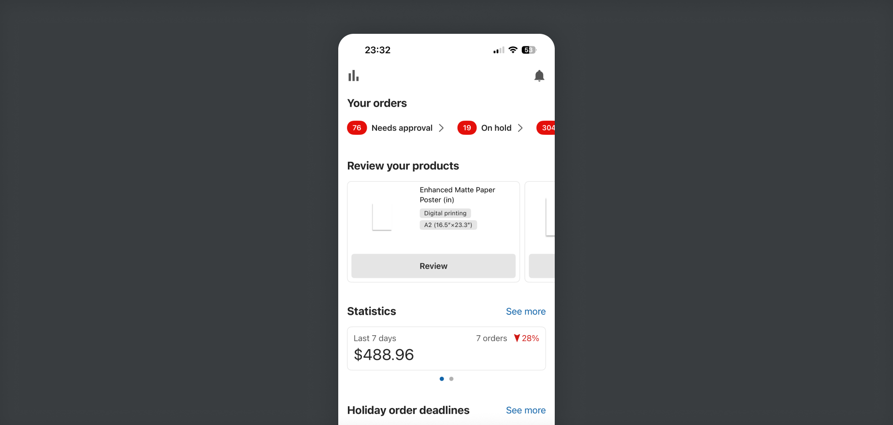
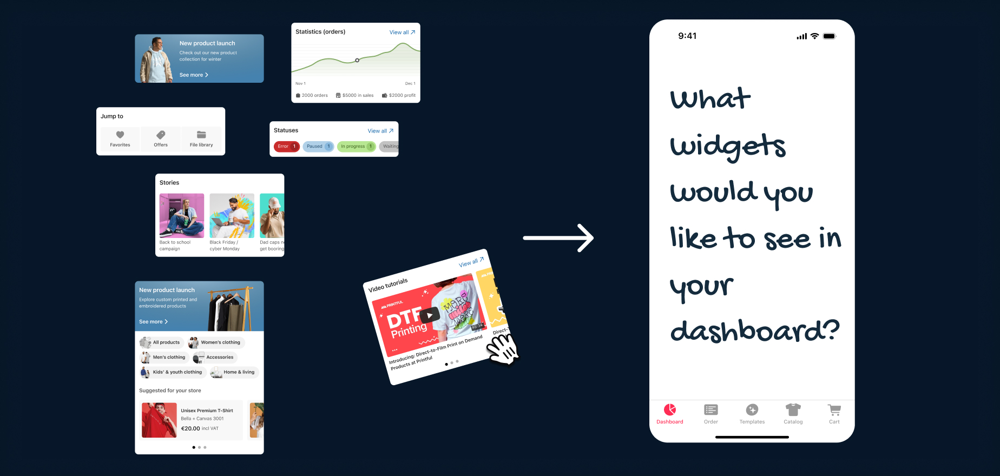
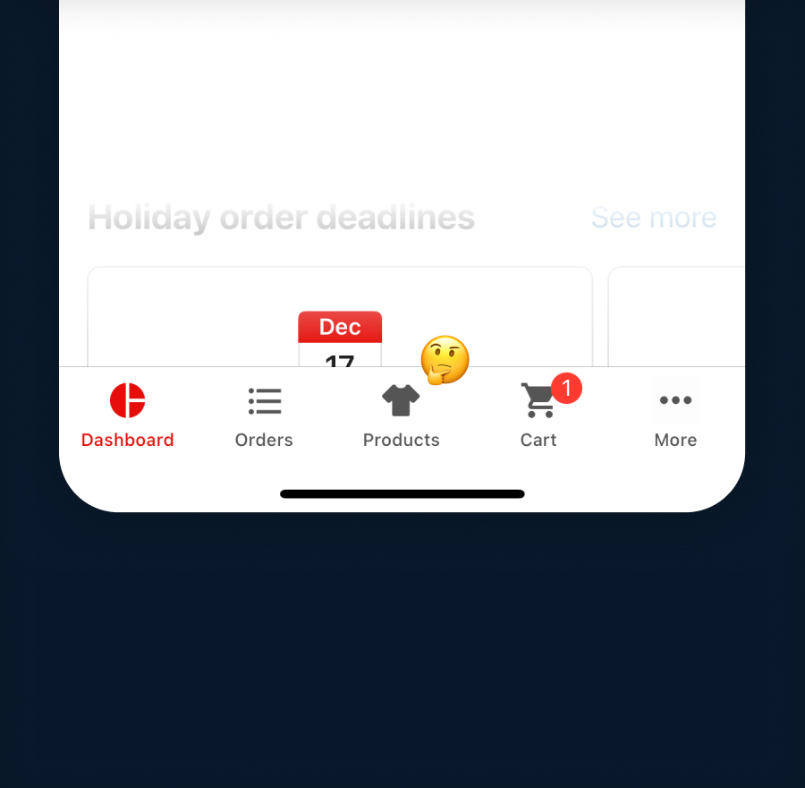
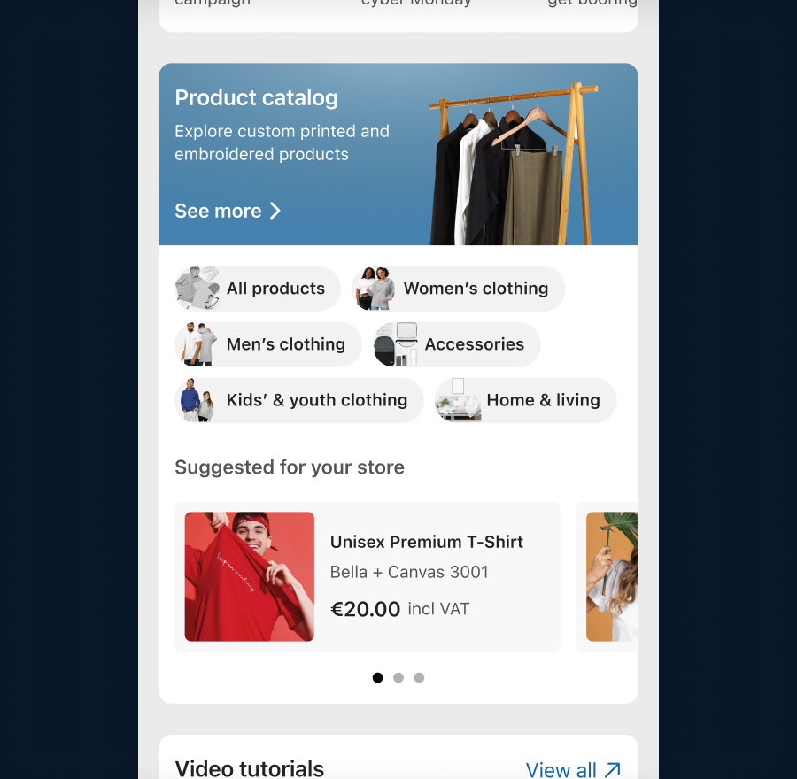
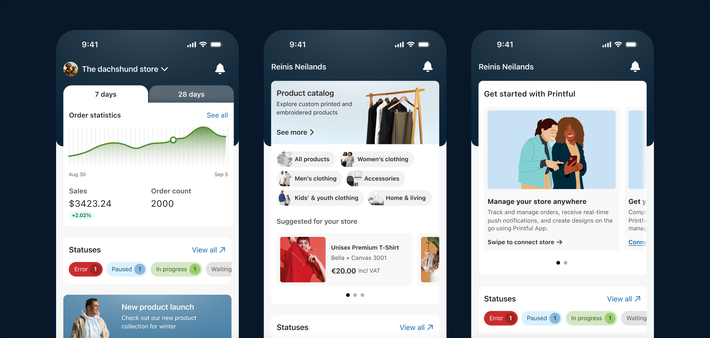

Mobile Dashboard Redesign
Project for Printful
Launched

Project for Printful
The Printful mobile app is a utility tool designed for managing a print-on-demand business on the move. It allows users to track order updates, approve pending items, and make quick purchases. The dashboard is the absolute core of this experience - the primary hub providing critical information at a single glance.

A mobile dashboard needs to deliver maximum value in a highly constrained space. Printful's existing app dashboard was falling short; it lacked key functionalities and didn't adapt well to user intent. To improve overall retention and utility, we needed to redesign the dashboard from the ground up, transforming it from a static page into a high-functioning overview tool.
As the lead designer on the project, I quickly realized we were dealing with a split-identity crisis. Our user base was divided into two entirely distinct segments, each using the mobile app with a different primary goal:
The SMB (Small/Medium Business) Merchant: "I just want to check how my store is doing while I'm out and about." They need high-level analytics, sales statistics, profit margins, and order fulfillment statuses.
The DTC (Direct-to-Consumer) Creator: "I want to design and order custom products directly from my phone." They don't care about complex business analytics; they want quick access to templates, creation tools, and inspiration.
A single, generic dashboard wasn't meeting either of these needs effectively. We needed a flexible, widget-led structure that could cater directly to both intents.
To validate our directions before moving to high-fidelity designs, I collaborated with our user researcher and project manager to analyze existing app data, review drop-off points, and run a series of usability tests.

We conducted a card sorting exercise asking users a simple question: What widgets would you like to see in your dream dashboard? This helped us prioritize content blocks by real user value, ensuring that analytics, order statuses, and creation shortcuts were balanced appropriately based on the user's profile.


During research, we uncovered a fascinating UX blind spot. Multiple users explicitly stated: "I wish the product catalog was available on mobile." The twist? The product catalog was already available on mobile - prominently featured as a primary icon in the bottom global navigation bar. Because users are conditioned to look directly at the central content viewport on a dashboard, their eyes completely skipped over the persistent bottom navigation. To fix this severe discoverability gap, I designed a dedicated Product Catalog Widget directly into the dashboard flow, making product exploration instantly accessible.

The final solution is catered towards each user segment - SMB users get presented with their store performance data, while DTC's see product suggestions they can design on. New user users get helpful tips to get started with Printful.
Taking the insights from wireframes to interactive prototypes, I didn't just focus on the interface - I used this project to introduce several key Design Ops improvements to optimize our development handoff:
I anchored the redesign heavily in native elements from iOS (HIG) and Android (Material Design). This ensured the app felt inherently fast, familiar, and predictable.
Managing orders means dealing with chaos - failed payments, stuck shipments, and empty data states. I built a comprehensive edge case library documenting these rare scenarios so the UI would fail gracefully and consistently.
I organized, structured, and cleanly labeled every single user flow within Figma. This turned our design canvas into an explicit roadmap, allowing the development team to understand the complete logic and edge cases without needing constant alignment meetings.
By breaking down the dashboard into tailored, intent-driven widgets, we turned a forgotten landing page into a highly functional hub that serves our users, no matter how big or small their business is.
The project was launched and is available in the Printful mobile app.